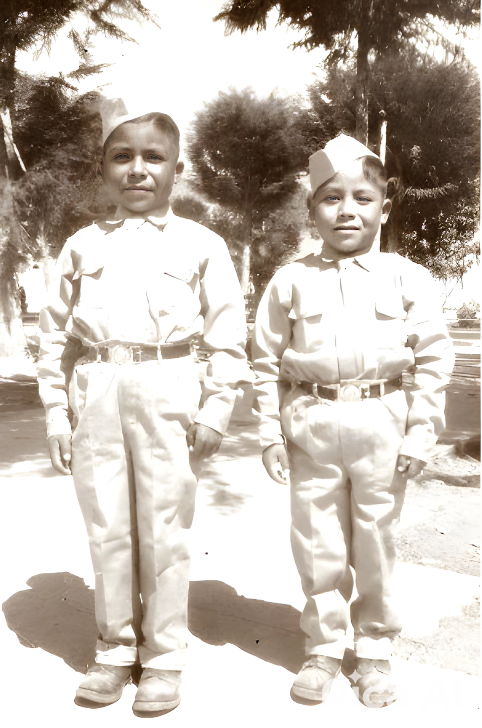
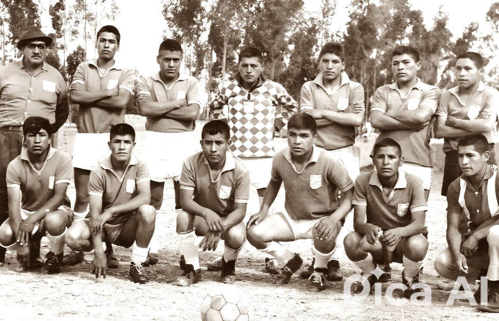

Cuando recuerdo a mi querido hermano Andujar (Andy), se me ocurre la idea que, si no supimos aprovecharlo en toda su dimensión humana mientras estuvo con nosotros.

Cuando pequeño, en la “Pequeña Rusia”; como llaman a un pueblito en la sierra de Junín llamado Muquiyauyo, recuerdo a mi madre hablar mucho de uno de mis hermanos mayores que apenas terminado sus estudios secundarios migro al capital motivado por el ansia de estudiar en la Universidad de Ingeniería (UNI) de Lima. A decir verdad, méritos no le faltaban, era como se decía un “chancón”, de esos que, aunque no tenía los recursos materiales y/o económicos necesarios se las arreglaba para ocupar los primeros puestos en el colegió, su fuerte, las matemáticas. No era de verbo florido, un poco callado pero legal y de buen corazón.
Andy, Estudió en el CE 512, luego en el Colegio Nacional "Bruno terreros", por aquellos tiempos se daban los grandes cambios y revoluciones en el mundo, eso despertaba en los muchachos de aquella época la urgencia de cambios, revoluciones, progresos.
Le gustaba jugar fútbol, muchas veces a riesgo de recibir una “tundra” por regresar a casa fuera de hora o con el uniforme sucio. Tenía como modelo de vida profesional a un profesor de matemáticas “El Ing. Ramos”. Formaba grupos de estudio que con “Baldor“ en mano ponían en aprietos a los profesores de ciencias. No había impedimento para estudiar, si en las noches no había luz en casa, se reunían en las esquinas para aprovechar el alumbrado público y ni qué decir de lo inclemente del clima, a veces -5 grados de temperatura, donde por la mañana el hielo forma una delgada capa sobre el agua.

Apenas egresado del Colegio Bruno Terreros, decidió pedirle a papi “tico” que lo lleve a Lima. Lo llevo a una familia; “padrinos” de matrimonio. La frase que Andy me contó cuando llegó a casa de los padrinos fue que le dijeron “Uy hijito estás “soñando”, es algo imposible, mira a tu primo (hijo de los padrinos), no puede ingresar con todas las facilidades que tiene, y tú que vienes de “provincia” … no creo que puedas, mejor regresa, trabajas un tiempito, aunque sea en las minas, ganas tu “platita” y regresas para prepararte en una buena academia y postulas...”. Quizá esta frase no lo amilanó, más bien le sirvió de reto personal para intentar una y otra vez. Él decía, “si no entro por la puerta, aunque sea por la ventana, pero voy a ingresar a la UNI”. Así lo hizo. Una madrugada llego a Muquiyauyo con el corte de pelo de rigor, había ingresado y no menos que a Ingeniería Mecánica – Eléctrica, osadía que le tomo casi diez años concluirlo.
Siempre me pregunto, mientras estudiaba ¿Como la hizo para sobrevivir en la capital?, solo él lo sabe. Lo poco que se es que se apoyaron uno a otro entre Nora y Lorenzo (mis hermanos mayores). En versión de Lorenzo, opinaba sobre Lima, si no tienes una buena formación moral desde el hogar, es necesario esforzarse para lograr los objetivos o te pierdes entre pandillas y la mala vida del entorno en que les tocó vivir, el famoso distrito capitalino de la Victoria, cuna del “cholo” Hugo Sotil.
Recuerdo cuando pequeño, me llevaron a visitarlos a Lima, Andy me llevo a almorzar. Caminamos por lugares que para mí todo era novedoso. Fuimos al restaurante del pueblo del Partido Aprista. Por el costo (casi gratis) servían sopa de verduras de entrada y segundo de menestra. Supongo que le daba “pena” por lo “ligero” del almuerzo, me preguntó si me había llenado, le dije que sí, pero insistió y compro un kilo de uvas y nos fuimos a un parque cercano y le dimos “trámite” a la fruta. Tiempo después me enteraría de los apuros que pasaban y que a veces, apenas tenían para pasajes.
A pesar de las limitaciones, una vez concluido sus estudios universitarios hizo sus prácticas y por fin pudo manejar sus propios ingresos. Posteriormente migraría a la ciudad de Iquitos donde desarrolló prácticamente la mayor parte de su “vida” profesional en una empresa generadora y comercializadora de energía eléctrica. Tuvo familia, esposa y dos bellas hijas. Aun así, creo que no todo estaba completo porque la familia residía en Lima.
Alguna vez lo visité a Iquitos. Ya era más joven y estaba en el limbo respecto a mi futuro y me sugirieron visitarlo para tener otra óptica que me ayudaría a decidir que podría “hacer” de mi futuro. Estaba más perdido que “cuy en tómbola”. Vaya que me sirvió el viaje. Este tiempo; aproximadamente medio año, me sirvió para conocerlo más de cerca, pues por la diferencia de edades yo era pequeño cuando ellos (mis hermanos mayores) ya estaban lejos de casa. En ese tiempo vi el valor que tenía como persona. Un tipo honesto, muy formal, apegado a las reglas. Tenía una habilidad y conocimiento muy amplio en temas de generación de energía térmica. Era un “técnico” muy dedicado a lo que hacía, siempre tenía maneras de solucionar a los problemas que tenía la población; propio del clima tropical y lluvioso. Como dicen “criollamente”, era un “ingenierazo” en todo el sentido de la palabra. Una ocasión me conto que una de las personas que le inspiró en elegir la profesión fue el tío Juan.
Después de muchos años de labor en el “campo”; dirigiendo y operando los motores decidieron cambiarlo para realizar trabajos de “escritorio”. Esto y otros temas de “movida” administrativa – política no ayudó a su permanencia y renunció. Para paliar la situación (creo) la empresa le sugirió formar una empresa de servicio propia, pero los negocios y “las movidas” que se tenían que hacer para verse favorecido con las adjudicaciones no lo convencieron y dejo todo para irse a Lima al lado de su familia.
En Lima se dedicó a formar una que otra empresa, pero como siempre, los tratos (no correctos) para obtener adjudicaciones o servicios lo terminaron por consumir. Era un tipo muy honesto y confiado y por raro que parezca esto no lo ayudaba en los negocios.
Lo perdí de vista por mucho tiempo, pues yo ya estaba trabajando y formando una familia en una ciudad al norte de Perú. De pronto un día me dijeron que -hacía tres días que su familia no sabía de su paradero. A veces esto ocurría pues por su labor tenía que “salir” fuera de Lima de un momento a otro, pero luego se comunicaba y todo solucionado. Esta vez era muy extraño porque “nadie” sabía dónde estaba y solo lo habían visto salir con personal de apoyo. Luego de una intensa búsqueda encontraron su “cuerpo” en la morgue como “NN”. Es un misterio como paso eso y siempre lo lamentaré no haber hecho nada al respecto.
Ahora después de mucho tiempo, después de haberlo “visto” en sueños constantes pienso que como familia pudimos haber hecho algo más para aprovechar ese cerebro y su espíritu emprendedor, quizás sugerirle para que haga pedagogía para trascender sus conocimientos y experiencia.
Siempre estaba pensando en "emprender" negocios familiares. Allá por los 80 ya tenía pensado en industrializar productos naturales (andinos), años más tarde aparecería Santa Natura. Después pensaba poner una fábrica de productos de ferretería con plástico (tubos, codos, niples, Etc.)., también en una imprenta o fotocopias cerca a los centros de estudios. Todo esto no se pudo hacer realidad, pero lo que, si queda, como algo patente, es su afán por la "re-forestación". Cada vez que nos visitaba allá en la sierra central (Muquiyauyo), recorría las chacras donde crecían árboles de eucaliptos y recolectaba las "plantitas" que nacían al pie. Cuidadosamente los ponía en repositorios a modo de almácigos muchos de los cuales mamá Silvina los trasplantaba alrededor de las chacras. Con el tiempo, esmero y cuidado llegaban a ser frondosos árboles que daban sombra, leña para cocinar y madera para la construcción de casas.
Andy, te digo que los domingos en misa pedimos por tu eterno descanso y que estés disfrutando de la felicidad que todos deseamos “vivir” una vez que dejemos esta corta vida. En casa siempre tratamos de Imitar tus buenos hábitos como el de hacer deporte, estudiar y dar buenos consejos a los hijos. Como decías “Los valores que nos han inculcado los viejos (nuestros padres), no se pierden, aunque estemos en dificultades, es como el árbol de eucalipto si ha crecido recto pase lo que pase no se tuerce”. Hasta pronto.